Local winds
Convective clouds indicate up slope circulations during daytime (Photo: A. Christen)

Learning Objectives
- Name which part of the atmosphere is affected by daytime heating and nighttime cooling of the surface, and describe key properties of this layer.
- Explain how surface heating / cooling impact lapse rates (i.e., the vertical temperature profile in the atmosphere).
- Describe how local wind systems develop as a consequence of different heating / cooling rates.
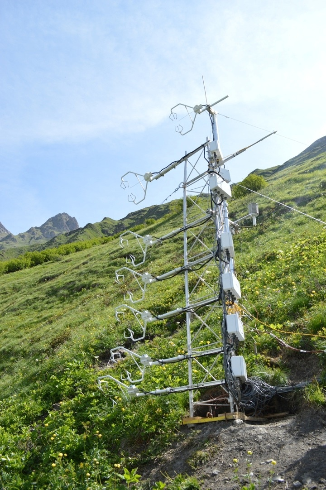
The urban canopy
(Photo: A. Christen)
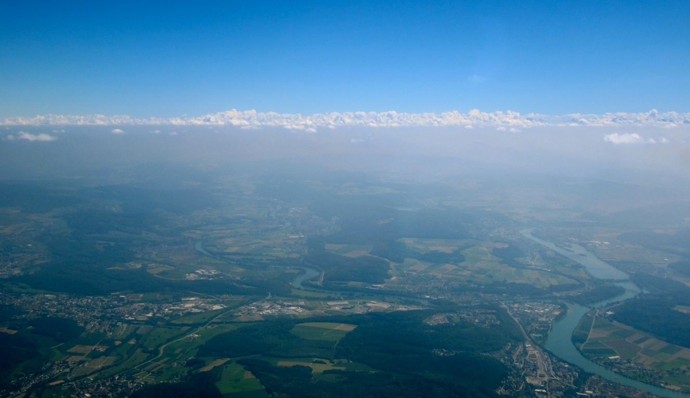
(Photo: A. Christen)
The atmospheric boundary layer
The diurnal cycle of daytime heating and nocturnal cooling does not affect the whole atmosphere of Earth but is rather limited to a shallow layer (1 - 3 km during day, 100 - 500 m during night). This layer is called atmospheric boundary layer (ABL).
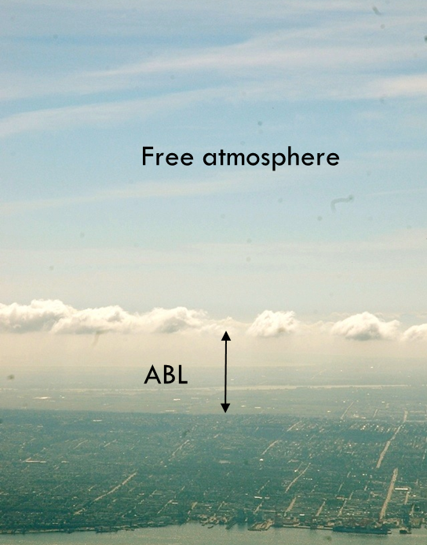
The atmospheric boundary layer
- The atmospheric boundary layer reacts within several hours (< 1 day) to changes at the surface. Therefore we measure a diurnal cycle of temperature, humidity, wind and air pollutants in the ABL.
- The ABL consists of: the surface layer (lowest 100 m or so), the mixed layer, and a “lid” of stable air.
- Turbulence is best developed near the ground.
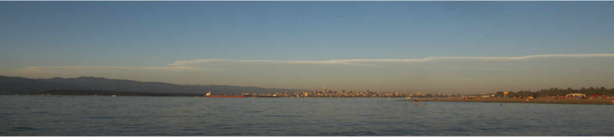
The atmospheric boundary layer
- The ABL consists of: the surface layer (lowest 100 m or so), the mixed layer, and a “lid” of stable air.

The atmosphere above Los Angeles (Photo: A. Christen)
The daily variation of the depth of the atmospheric boundary layer is an important control on air quality.
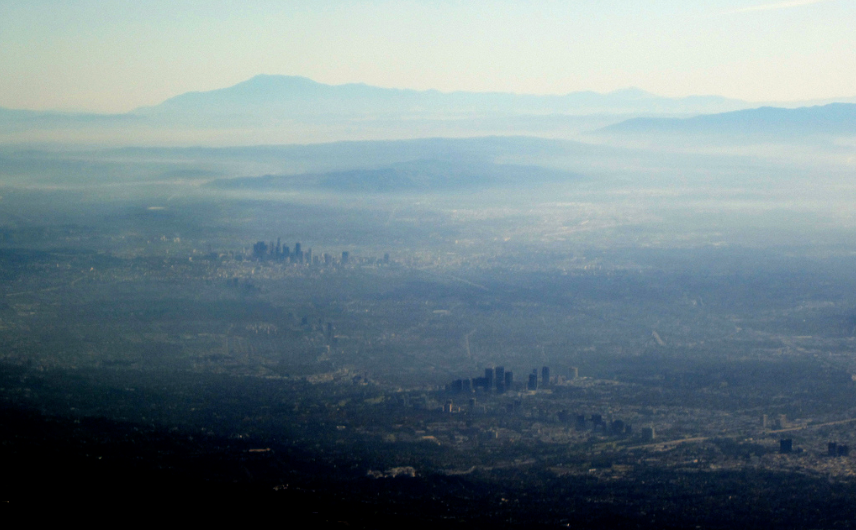
Commonly there are clouds at the top of the daytime ABL.
Cumulus clouds capping the daytime PBL in the Okanagan Valley, BC (Photo: A. Christen)
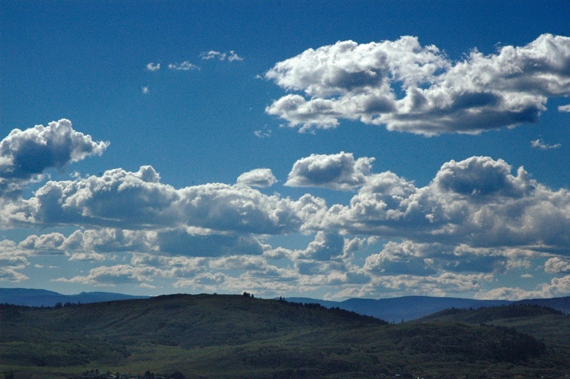
Thermals in the ABL
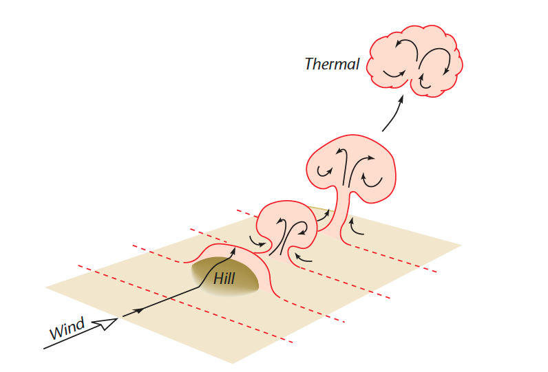
Which line corresponds to before sunrise and which one corresponds to mid-day?
ABL
Daily variation of air temperature

Overnight inversion near the ground, residual weak lapse above – no mixed layer (h*).
Surface heating eroding inversion (which is still aloft) – shallow mixed layer. Heating extends through the full depth of the ABL, lapse all the way up – deep mixing. Net radiation negative surface inversion starting to form – surface effects stifled.
Daily variation of air temperature
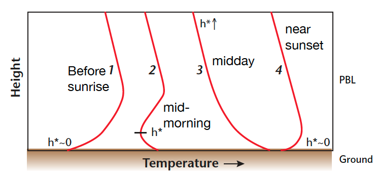
stable
stable
neutral
unstable
neutral
Idealized daily variation of ABL
T.R. Oke (1987): ‘Boundary Layer Climates’
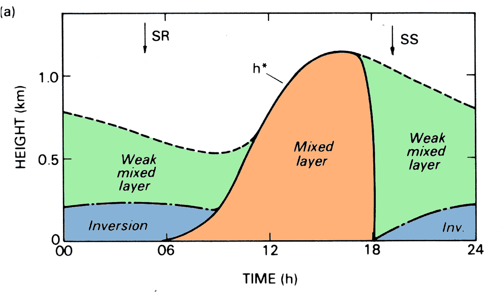
Local winds
(Photo: A. Christen)
- Local-scale thermal winds are induced by horizontal pressure gradients in the ABL, due to differences in surface heating or cooling.
- There is usually a circulation (thermal circulation) associated with these flows, i.e., air moving one way near the surface with an opposite (return) flow aloft.
Pressure differences in warm and cold air
Air pressure decreases more rapidly with height in a column of cooler air.
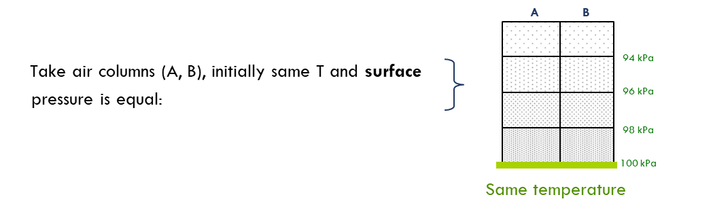
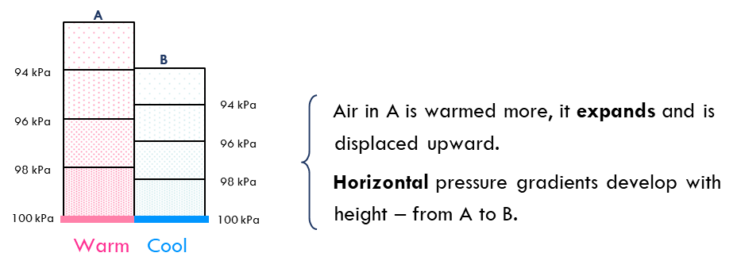
A circulation is formed.
The surface pressure gradient moves air from B to A.
Thermal circulation
Air aloft moves horizontally from A to B.
Displaced mass causes surface pressure to rise in B and drop in A.
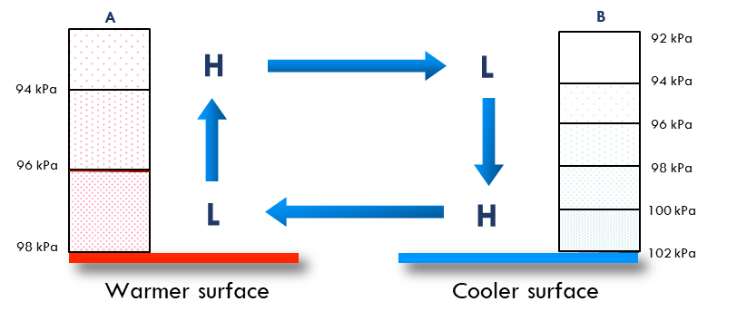
Local-scale thermal winds in Vancouver?
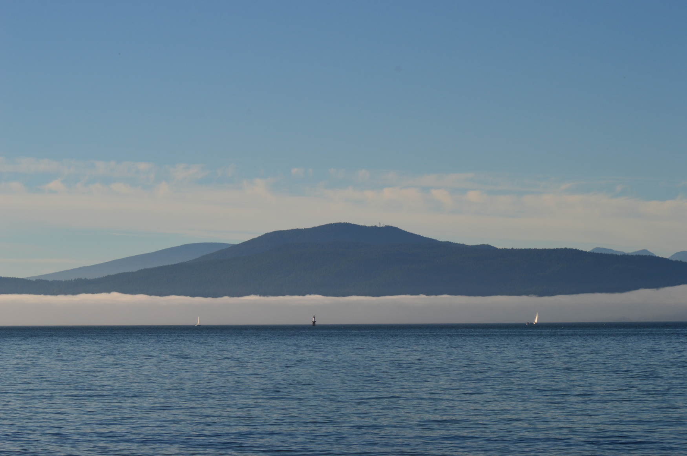
T.R. Oke (1987): ‘Boundary Layer Climates’
Land and sea (lake) breeze system
- By day - Tland > Tsea because water:
- Allows sub-surface penetration of K↓ in a volume.
- Allows convective mixing of heat in a volume.
- Has greater evaporative use of Q*.
- Has higher heat capacity hence warms less for unit Q*.
- At night - Tland < Tsea because:
- Higher heat capacity water cools more slowly.
- Continued mixing of heat through deep layer of water but conduction only draws heat from shallow land layer.
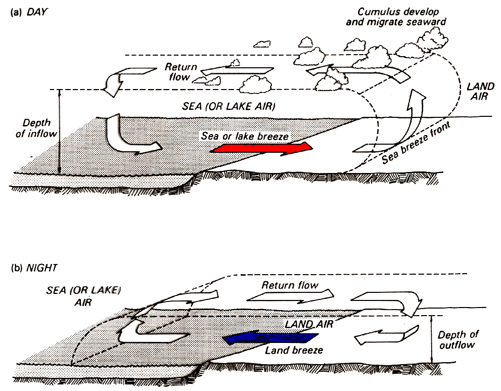
Which case is observed in the afternoon?
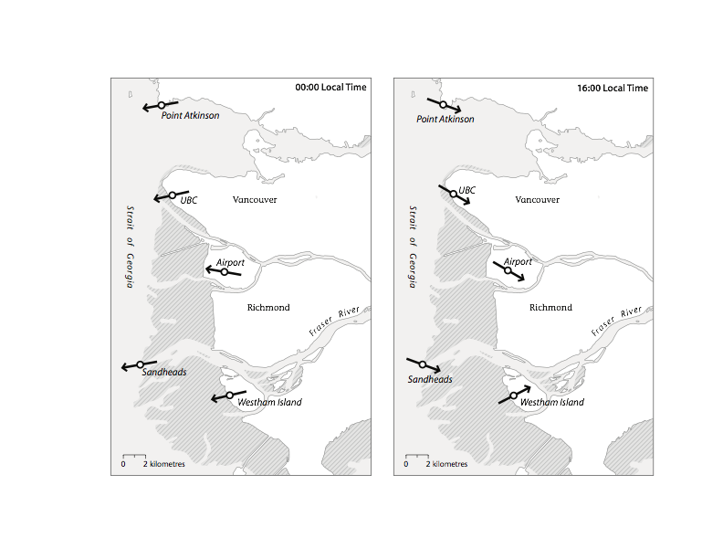
Photo: A. Christen
Wind direction at UBC climate station
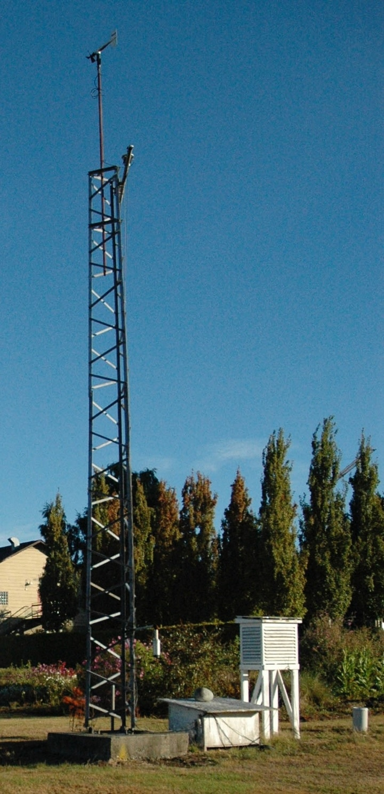
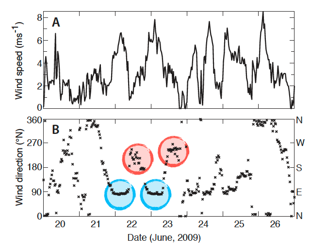
Photo: A. Christen
A sea-breeze
B land-breeze
C return-flow
What is this case called?
Wind direction at UBC climate station
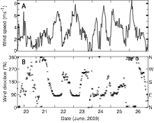

Local winds at slopes
- By day, hot air at heated slope surfaces is less dense than air at the same horizontal level over the valley – it rises:
- → anabatic (upslope) breezes
- At night, radiation cooling of slope surface makes air denser than at same horizontal level over valley – air sinks:
- → katabatic (drainage) winds
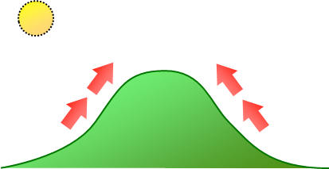
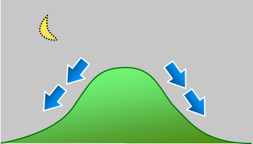
Katabatic flows
The katabatic flows at night due to gravity, cause cold air to accumulate in low-lying areas or on the up-slope side of barriers (walls, hedges, embankments). Such pooling of cold air gives greatest frost risk at low spots. Mid-way up valley sides are the mildest – called the thermal belt.
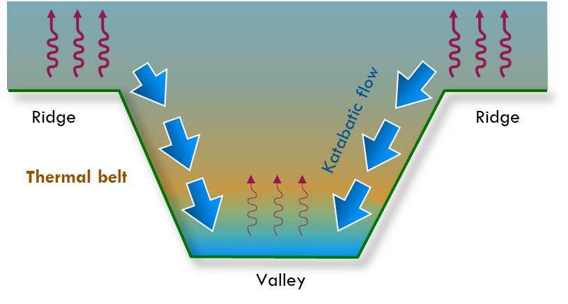
2009
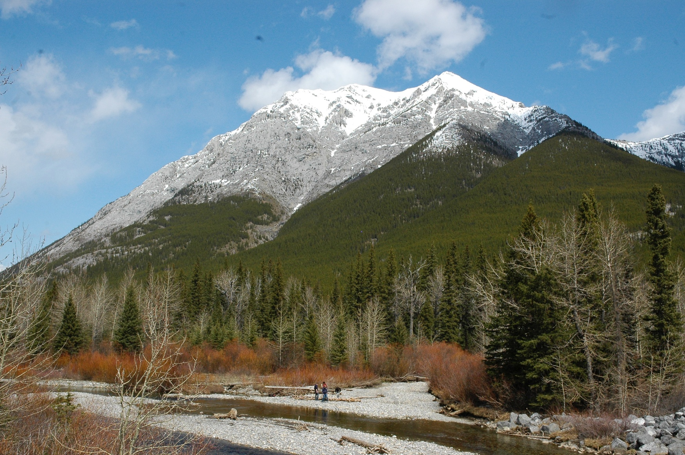
2009
Where do you expect the greatest mountain pine beetle damage?
2011
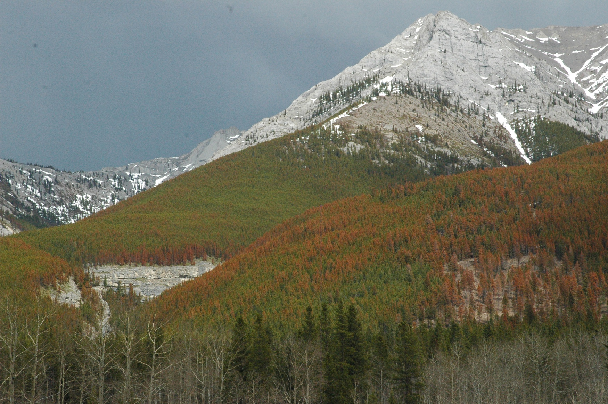
Most damage midway up slopes - thermal belt
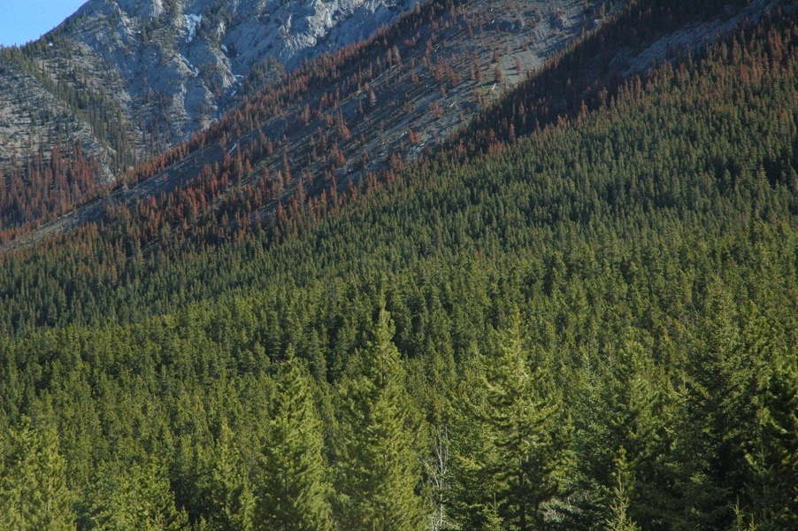
Local winds in main mountain valleys
By day, in mountainous areas, the air at higher elevation warms more rapidly than that down the valley triggering up-slope (anabatic) flow and also up-valley flow.
T.R. Oke (1987): ‘Boundary Layer Climates’
At night the rapidly cooling air on mountains flows down by gravity (katabatic flows) and combines to form mountain winds flowing down the main valley
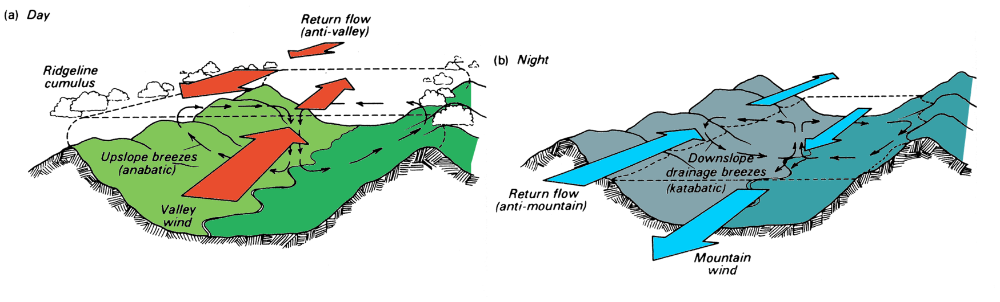
Mountain and valley winds
- These winds have been observed in a 1 km deep valley on Mt. Rainier, Washington (Buettner, 1967)
- The existence of such regular patterns have implications for the spread of air pollutants, seeds, pathogens etc.

Other thermal winds
Wherever there is a horizontal temperature gradient a pressure gradient will develop and may generate thermal winds.
Can you think of other thermal winds?
Other thermal winds
Wherever there is a horizontal temperature gradient a pressure gradient will develop and may generate thermal winds.
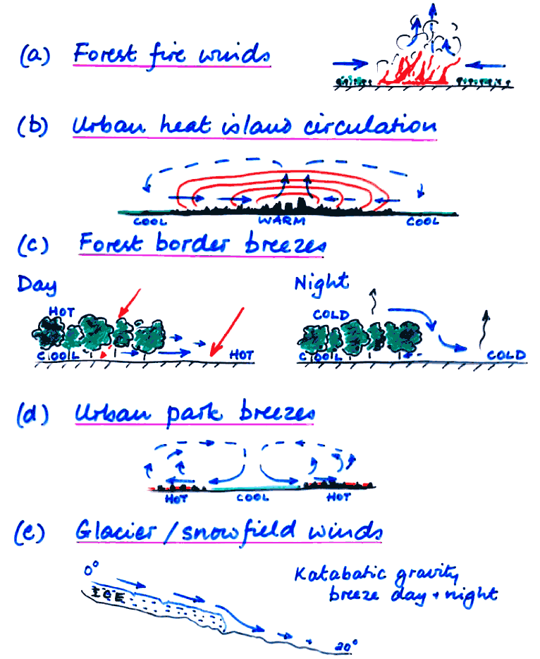
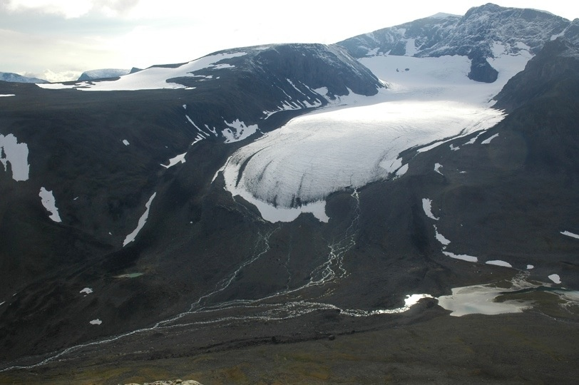
synoptic wind
Foehn-wind (adiabatic compression) in the Alps. Photo: Mesoscale Alpine Programme (map.meteoswiss.ch).
Regional winds
There are also many regional winds with special names. Many have meso- or synoptic scale roots but are essentially drainage winds (Squamish, Howler, Bora, Mistral) or due to adiabatic compression heating (Chinook, Santa Ana, Föhn)
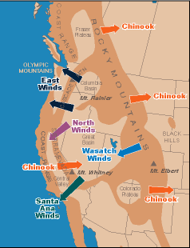
Take home points
- Atmospheric boundary layer (ABL) - the layer where we measure a diurnal course of temperature, humidity, pollutants etc.
- Local winds are induced by horizontal pressure gradients in the ABL, due to differences in surface heating or cooling.
- Common local wind systems reverse between day and night and are: land and sea breeze, valley winds, slope winds. Daytime upward winds are called anabatic, nocturnal downslope winds are called katabatic winds.